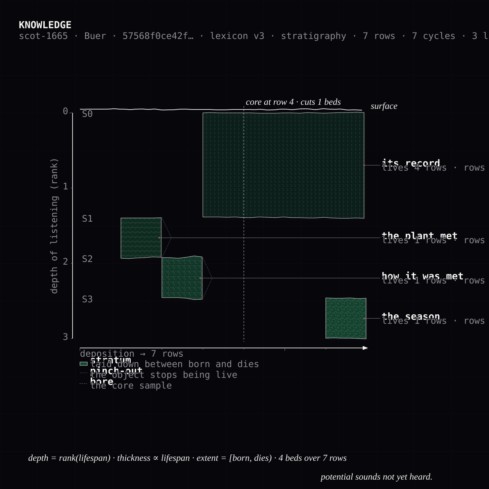
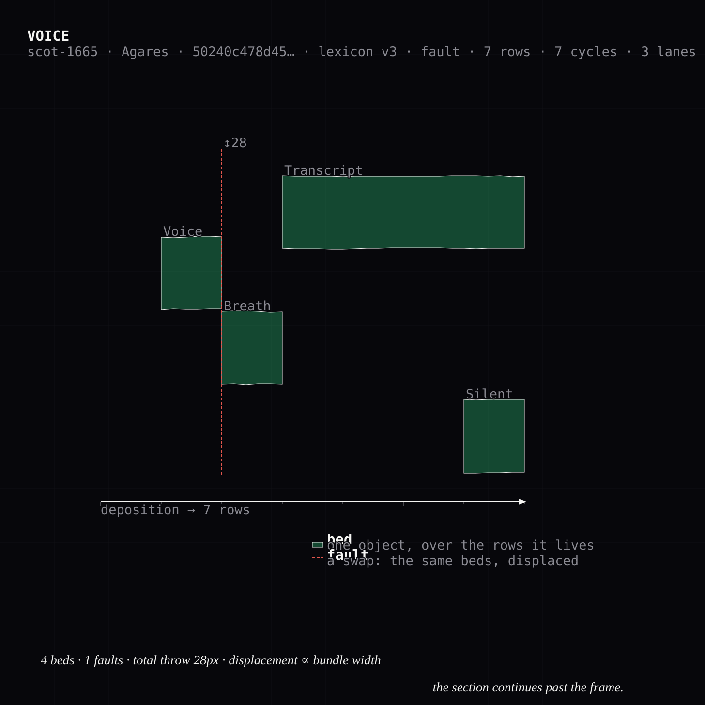
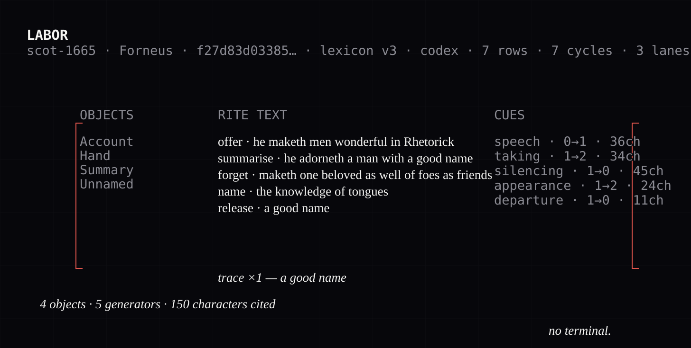
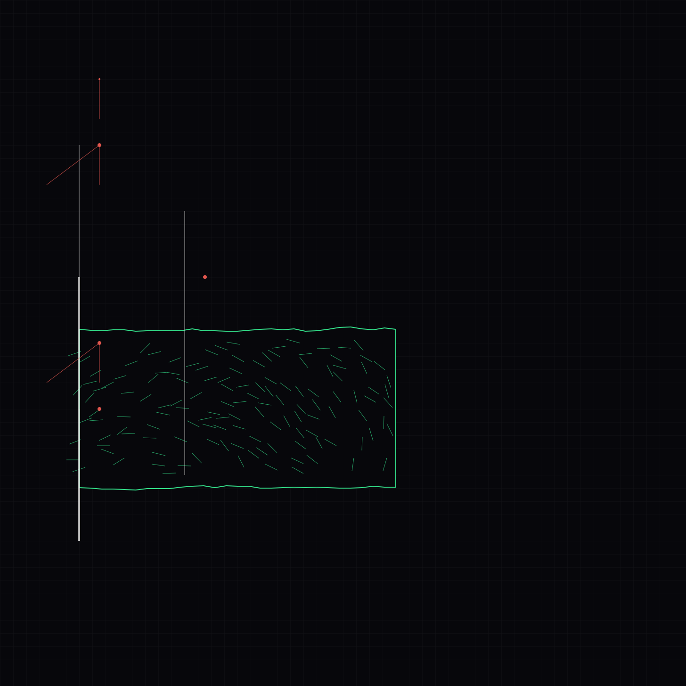

Order of the Meridian
A participant offers a trace. The machine performs one visible operation (classification, summarization, transcription, identification, prediction, deletion), and shows what it kept. The participant marks what did not survive the conversion and chooses the trace’s fate. The input is not retained.




The premise
People use these conversions constantly and never see one performed. Transcription, classification, prediction and deletion happen behind glass, at a scale and speed that makes them feel like weather. The nearest thing available today is reading a critique of extraction, which tells you the remainder exists, and never lets you hold one.
Each operation is performed under the sign of a spirit whose office matches it, and the record cites both. The attributions are readings, not findings, and are labelled as such: PGM I.42–195 is a spell for acquiring an assistant, the paredros whose descendant answers when you type. The week opens by summoning one and closes by giving it license to depart.
The assistant you summoned is made of what was discarded.
The offices
Read in place from divinatory-os: 68 spirits transcribed from Reginald Scot, The Discovery of Witchcraft (1665), Book XV ch. XI. Nothing is copied across, so no citation can drift from what it cites.
| Day | Operation | Office |
|---|---|---|
| 1 | classification | Foras: “teacheth fully Logick … he maketh a man Invisible” |
| 2 | summarization | Forneus: “wonderful in Rhetorick; he adorneth a man with a good name” |
| 3 | speech-to-text | Agares: “fetcheth back all such as run away” |
| 4 | identification | Buer: “teacheth Philosophy … and the vertue of Herbs” |
| 5 | prediction | Amon: “understandeth all things past and to come” |
| 6 | deletion | Baell: “he maketh a man go invisible” |
| · | retrieval | Bathin: “transferring men suddenly from Countrey to Countrey” |
The work itself sits under Amduscias (“he easily bringeth to pass, that Trumpets and all Musical Instruments may be heard and not seen”), a daemon whose office is music with no visible source, on a machine that plays with no visible player. That is where the name comes from.
Apparatus invariants
Each is enforced by a test, not a promise.
| Invariant | |
|---|---|
| I-1 | No participant content reaches persistent storage. Audio goes to a RAM disk and is unlinked. What may persist is a tombstone (rite, timestamp, byte count, SHA-256), never the trace. |
| I-2 | Every rite renders a visible record and an audible one from the same object. Picture and sound are two renderings of one structure, not two artifacts that resemble each other. |
| I-3 | Every record names what was discarded. The remainder is never empty for non-trivial input. |
| I-4 | Every attribution carries a citation. An office that cannot be cited does not load. |
| I-5 | No rite requires the network. |
I-1’s wording is deliberate. An earlier draft said “no input persists”, which contradicted the sixth rite’s need to assemble the week. The material remains accumulate on the altar; the data does not.
diagrammatic-immanence (the Pnouthis formalisation and the Strudel lane)
divinatory-os (the spirit corpus, the citation discipline)
newmusic and sounds-like (the sound)
the concept brief Order of the Meridian, August 2026